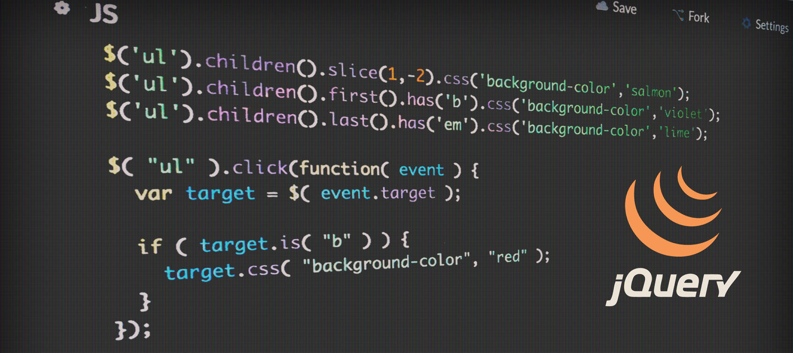

HTML/JS: Making Webpages Interactive with jQuery
This module taught me about the Javascript library known as jQuery. I learned how to use it for a variety of tasks in order to make webpages interactive. This involved DOM access and modification, function calls, collection looping, form processing and animations.
Impact on Me as a Student
This module helped to of course learn about jQuery and how to use it as well as some of its different possibilites. I learned of its uses in responding to user events with event listeners and processing forms. It taught me about libraries and that there are many external libraries out there that maximize efficiency and bring new capabilities to my program. jQuery specifically also gave me a further understanding of how to make a webpage interactive and how to utilize the DOM.
How Will I use this to Continue Learning?
Whether or not I use the jQuery library, I will continue to be aware of external libraries and that they are made to be helpful and can make my code more efficient and provide more functionality to my programs. In a broader sense, the availability of external resources is something that can be applied to other works and academics. The use of external resources isn't necessarily a bad thing and doesn't mean your work isn't creative or is unoriginal but can enhance it and make it more efficient.